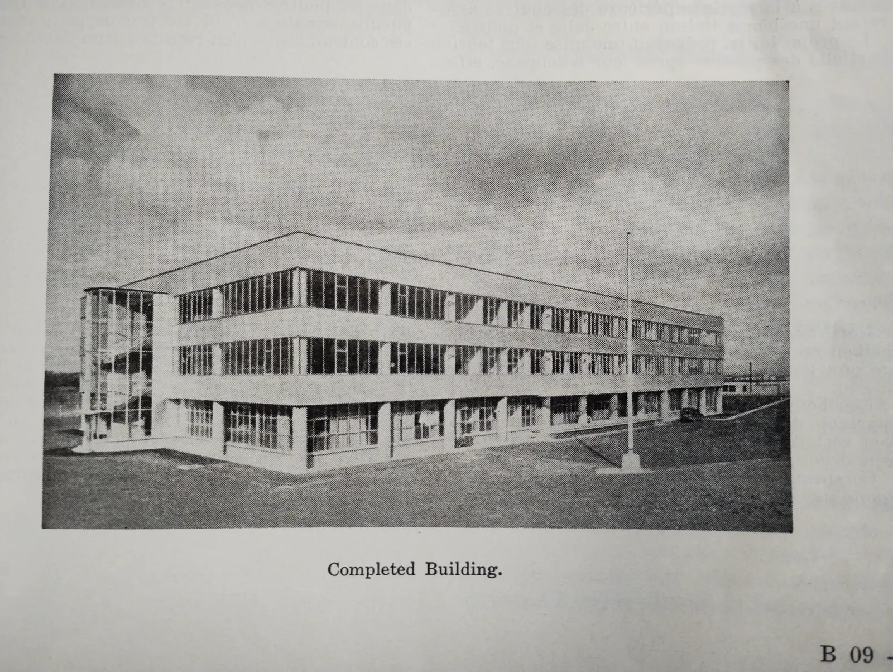
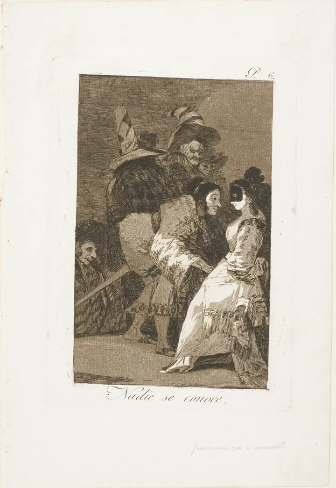

The shell
Demo pages go inside this shell: the substrate demo, the techniques specimen, the sound theme, the dataviz pilots. Each keeps its own art inside frames and takes the rail, the rooms, the labels and the second tour from here.

Specimens
-
42 / 41
Fail, heldA stamped verdict
Stamps overprint the output in the verdict's own colour.
Show me
tests_passed: 42, source: the test record
Fail, held
-
It is important to note that this release really works.
Weight from data
The variable weight axis carries the checker's severity.
-
Listen
A word made of sound
The picture is the synthesis input; the button plays it.
-
$ shell --help rooms, labels, a second tour
Typewritten output
Terminal text keeps the mono face and its line breaks.
Long text
Body copy stays in the text face at reading size, under 64 characters a line. Display lettering never carries body text. A dotted link prints a receipt on hover or focus; use it only where checking is the point.1
- 1. Notes sit beside the text on wide screens and fall under it on phones. Back to the text
A demo case
value: 42
Fail, held
value: 41
Pass, released
Steps
- ProposeThe first step.
- CheckThe step that decides.
- RecordThe receipt.
- EscalateNamed, not called.
- ServeRe-checked first.
Try it
python -m http.server